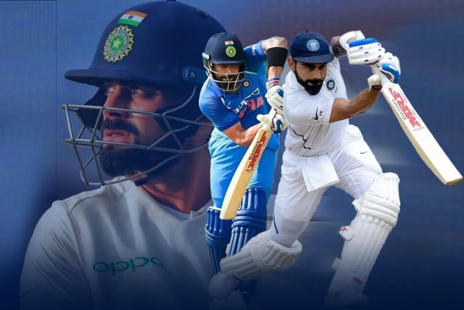

Introduction
Virat Kohli is an Indian cricketer and former captain of the Indian national cricket team. He is considered one of the best batsmen in the world and has numerous records to his name.

Early Life
Virat Kohli was born on November 5, 1988, in Delhi, India. He developed a passion for cricket at a young age and started playing for the Delhi cricket team. His talent and dedication soon caught the attention of the national selectors.
Cricket Career
Kohli made his international debut in 2008 and quickly established himself as a key player in the Indian team. He has scored thousands of runs in both Test and One Day International (ODI) formats and has numerous centuries to his credit.
Achievements
- Fastest player to score 8,000, 9,000, 10,000, 11,000, and 12,000 runs in One Day Internationals.
- Holds the record for most centuries in run chases in ODIs.
- Recipient of numerous awards, including the Sir Garfield Sobers Trophy for ICC Cricketer of the Year multiple times.